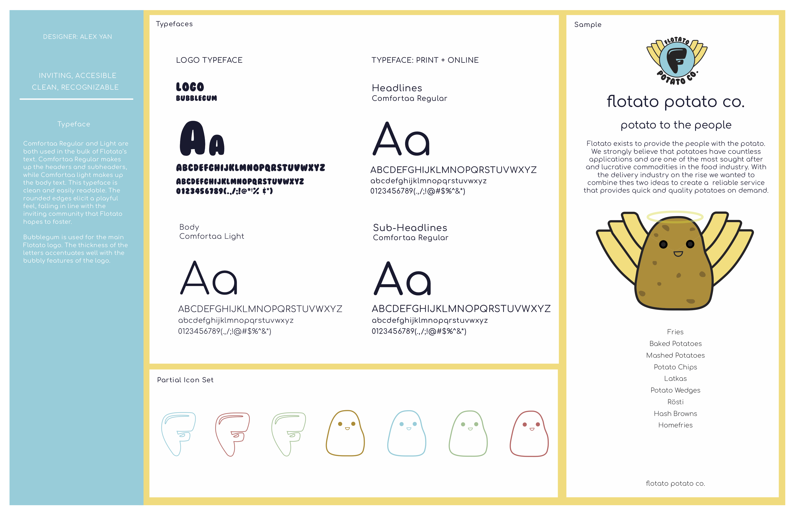
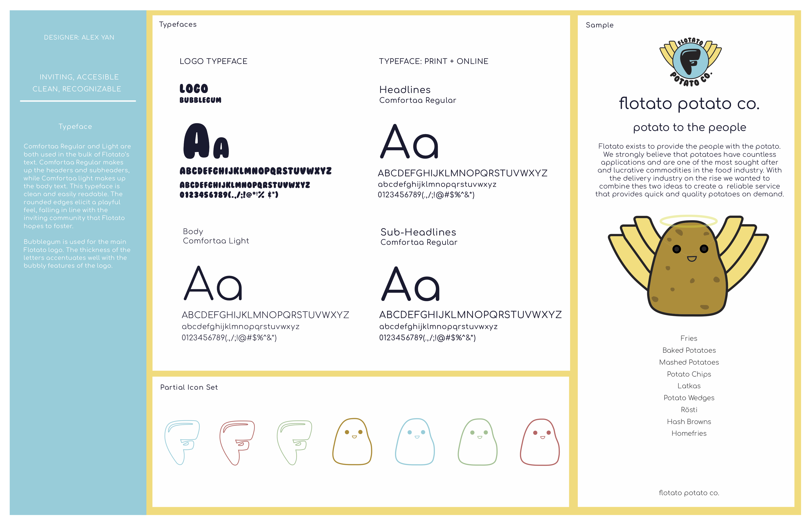

RESUME
RESUME
aspiring entrepreneur
passionate web and graphic designer
EDUCATION
Senior
(2015 - Present)
Nueva is a student-centered school known for its distinctive inquiry-based interdisciplinary studies, constructivist project-based learning, and its pioneering work in social emotional learning and design thinking.
COURSES
- Advanced Speech and Debate (SPCH201)
- Modern Physics (PHYS250)
- Environmental Economics (ECON210)
- Applied Statistics and Probability (MATH540)
- Multivariable Calculus (MATH520)
- Advanced Programming Workshop (CS301)
- Graphic Design (FA280)
SKILLS
- Adobe Photoshop
- Adobe Illustrator
- Microsoft Suite
Word, Powerpoint, Excel
- Web Design
HTML, CSS, Javascript, jQuery
- Ableton Live 10
- Public Speaking
LANGUAGES
English
Native Language
Chinese (Mandarin)
Native Language
Spanish
Proficient
SPORTS
Nueva Varsity Tennis
(2015 - Present)
Captain Senior Year
Co-Captain Junior Year
CLUBS
Speech and Debate
Organized and particpated in argument brainstorms, public forum debate rounds, and impromptu speaking events.
Spirit and Social
Helped plan and organize school events, such as dances and drives.
QUEST
Quest is a schoolwide program at Nueva that allows students to pursue and showcase their interests throughout four years of highschool.
By working with advisors and mentors, I crafted a personal in-depth exploration of various self-selected areas of evolving passion.
By working with advisors and mentors, I crafted a personal in-depth exploration of various self-selected areas of evolving passion.
9th

Pancake Printer
Built and modified a 3-D carving machine to hold pancake mix. Worked with peers and mentors to configure a carving program to allow for user-drawn pancake images.
10th
"Persuasian" Food Stand
Worked with a classmate to create a Persian/Asian fusion cuisine featuring five-spice gyro wraps. Visited food truck/stand gatherings to learn about the business and sold our creation for profit.
11th
Bitcoin Exploration
Researched the history of cryptocurrency and expert opinions on the topic. Learned the foundations of trading and involved myself in the market over the course of 6 months.

 



close x
PROJECTS
flotato potato co.
graphic design
STYLE TILE
(Fall 2017-2018)
Created an outline for a mock company with an emphasis on the creation, branding, and marketing of the logo. A style tile provides the client with various sketches and colorways of the logo, multiple typefaces, mock advertisements, example stationary, as well as business cards. Additionally, the style tile includes a description of the company, reasoning for the design choices, and how such decisions influence the target audience. Scroll through the slide show to learn more!
seeing things
photography
SERIES
(2016-2017)
Crafted multiple photo albums with an evolving central theme, whether it be a technical or physical aspect. A few notable areas of focus include city life, leading lines, depth of field, and collage. This series of photographs is showcased on the photographer Mark Taylor's blog alongside other Nueva students. Scroll through the slideshow and click any photo series to be taken to its collection on seeingthings.club.